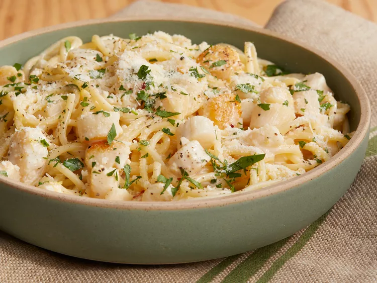

This scallop pasta dinner with a creamy sauce is fast and easy. I cook the scallops a bit longer than many chefs, but that gives the dish more flavor and they're still tender and moist. I think you'll agree, the sherry sauce benefits significantly from the longer cook time.

How to make
Bring a large pot of lightly salted water to a boil. Cook spaghetti in the boiling water, stirring occasionally until tender yet firm to the bite, about 10 minutes or 1 minute less than directed on the package.
Meanwhile, heat oil in a large skillet over high heat. When oil just starts to smoke, add scallops and move them into a single layer. Let sear on high for about 1 minute. Toss to turn.
Add butter and stir scallops until butter melts. Stir in garlic
Add lemon zest and red pepper flakes. Stir in sherry and cook and stir until alcohol cooks off, about 1 minute.
Pour in cream. When mixture begins to simmer, reduce heat to medium-low. Add salt, pepper, and lemon juice.
Drain pasta. Transfer to skillet with scallops; bring to a simmer. Add 1/2 of the chopped parsley. Cook until pasta is heated through and tender, about 1 minute.
Remove from heat. Garnish generously with grated cheese. Add the rest of the parsley. Serve in warm bowls.